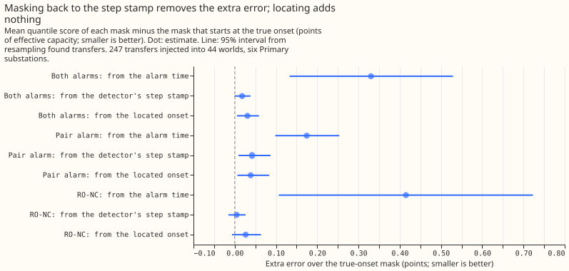
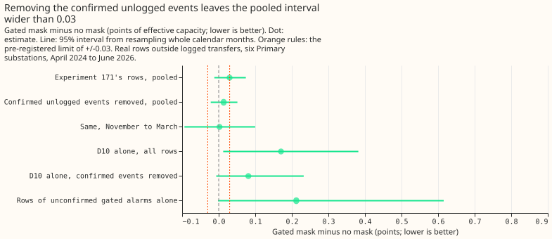
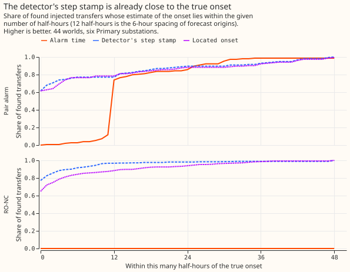

Are D10's extra errors from unlogged load shifts, and does locating the onset inside the look-back help the mask?
Masking back to the detector's own step stamp removes almost all the extra error of masking only
from the alarm time, and a search of the readings since the last forecast for a more precise onset
adds nothing. Part 2 meets its pre-registered rule (supported), but its comparison arm, masking
from the alarm time, is an arm that experiment 171 never used. Part 1 misses its rule
(inconclusive): the interval of the gated mask's difference from no mask is not inside +/-0.03.
The overall verdict, partly supported, is a judgement, because the plan registered a verdict for
each part only.
Background: what a mask is. Our forecast corrects itself using recent power. A "mask" sets recent power aside while a switching alarm is active. A pair alarm is a step in power at one substation matched by an opposite step at a neighbouring metered substation. A gated alarm is a pair alarm whose balance score is 0.7 or more, meaning the two steps are close in size. RO-NC is the detector of experiment 147, which fires on a step in a refitted residual with support from neighbouring series. A step stamp is the half-hourly timestamp at which a detector says the step happened. The alarm time is the later timestamp at which the alarm became known: about 6 hours after the step for the pair alarm (a median of 12 half-hours), and 48 hours for RO-NC (96 half-hours). The look-back is the readings between the step and the forecast origin, the moment a forecast run is issued (every 6 hours in production).
Background: what experiment 171 found and what we asked. Experiment 171 found that the gated mask scores 0.030 points of effective capacity worse than no mask on 27 months of rows outside logged transfers (95% interval -0.011 to +0.074), and that leaving out one substation, D10, removes the difference. Scores are twice the mean pinball loss over 11 quantiles, in points of effective capacity (the score in megawatts over the substation's AC capacity, times 100). A logged transfer is a movement of load between two substations recorded in the switching log of National Grid Electricity Distribution (NGED). The six substations scored, anonymised as D5, D9, D10, D11, D14, and D16, are Primary substations. Part 1 asked whether D10's gated alarms follow switching that NGED did not log. Part 2 asked whether the onset of a transfer can be located more precisely in the look-back than the alarm time gives, and whether masking from the located onset beats masking from the alarm time.
Part 1 method. Of the 49 gated alarms since 2024-04-10, 40 touch a scored substation, and 31 of those match no logged transfer. We confirmed an alarm when a persistent step (the median residual over the 12 hours after the alarm's step stamp minus the median over the 12 hours before) at its substation had an opposite step of similar size (0.5 to 2 times) at its partner substations, using thresholds fixed in the plan. We removed the rows from the step to 72 hours after each confirmed event and re-scored experiment 171's rows with the same quantile score and the same month-resampled interval. A row is one forecast for one half-hour from one forecast origin. The forecast is a frozen generalised additive model with a Kalman filter, as in experiment 171.
Part 2 method. Experiment 141's 44 worlds hold 210 injected transfers, and the two alarms find them 247 times in total (a transfer found by both alarms counts twice). We score those 247 matches and 15 logged transfers found by an alarm. At the first 6-hourly origin that can see an alarm, we searched the stamps within 24 hours of the detector's step stamp for the largest step with the same sign as the alarm's step, using only readings up to that origin. The stamp found is the "located" onset. Four masks differ only in the first masked stamp: the alarm time, the detector's step stamp, the located onset, and the true onset. The extra error of a mask is its score minus the score of the mask from the true onset, in points of effective capacity, on all leads of the daily forecast issued in the first 24 hours after the alarm. C2 is the share of the alarm-time mask's extra error that another mask removes: 1 minus the extra error of that mask over the extra error of the alarm-time mask.



Results
- Part 2, decisive contrast C2 (injected, both alarms, 247 transfers). Extra error over the
true-onset mask: alarm time +0.330 (+0.133 to +0.529), step stamp +0.018 (0.000 to +0.038),
located onset +0.031 (+0.005 to +0.059). Reduction from the alarm time to the located onset:
0.907 (0.735 to 0.984), against the pre-registered 1/3. Verdict for part 2:
supported. - What C2 does not show. The step stamp gives a reduction of 0.946 (0.832 to 1.001), and the located onset minus the step stamp is +0.013 (-0.008 to +0.037) points. The located onset is no better, so the gain comes from masking back to the detector's step stamp, which experiment 171 already does.
- By alarm. Pair alarm (87 transfers): reduction 0.779 (0.519 to 0.961); extra error alarm time +0.175, step stamp +0.042, located +0.039. RO-NC (160 transfers): reduction 0.936 (0.725 to 1.021); extra error alarm time +0.415, step stamp +0.005, located +0.027.
- Absolute scores, injected, both alarms. No mask 3.328, mask from the alarm time 3.127, step stamp 2.815, located onset 2.828, true onset 2.797, and the stream without the injected megawatts 2.483. Masking from the alarm time barely beats no mask because the readings since the step, which carry the transfer, stay in the filter.
- Location error, injected (half-hours; median |error| / 90th percentile). Alarm time: pair 12.0 / 25.8, RO-NC 96.0 / 97.0. Step stamp: pair 0.0 / 29.6, RO-NC 0.0 / 5.1. Located onset: pair 0.0 / 33.6, RO-NC 0.0 / 16.0. The median located error is 0 half-hours, well below the 12-half-hour (6-hour) spacing of forecast origins. The located onset is closer than the step stamp for 10% (pair) and 14% (RO-NC) of transfers and farther for 14% and 26%.
- Sensitivity (post hoc). Resampling the 39 worlds with scored transfers (of 44) gives 0.907 (0.747 to 0.974). Leaving out any one substation leaves the reduction between 0.88 and 0.97. D10 alone, 14 transfers: 0.780 (-0.351 to 0.965).
- Real logged transfers (secondary, decide nothing). 9 transfers found by the pair alarm and 6 by RO-NC. Pair alarm: extra error over the true-onset mask alarm time -0.027 (-0.713 to +0.677), step stamp +0.151, located +0.095. RO-NC: alarm time -1.536, step stamp +2.991, located +2.742 (all intervals include 0 except the RO-NC difference between alarm time and located onset, -4.279, -6.881 to -1.590). On 6 transfers RO-NC's mask from the step stamp scores 12.949 against 8.298 with no mask, as in experiment 156.
- Part 1, pre-registered contrast. Experiment 171's rows reproduce at +0.030 (-0.012 to +0.074,
1,579,711 rows; experiment 171 printed -0.011 for the lower end, because this experiment uses
a different bootstrap seed). With 8 confirmed unlogged events removed (1,543,752 rows) the pooled
difference is +0.014 (-0.022 to +0.051), half-width 0.036 against the limit of 0.03. November to
March: +0.002 (-0.094 to +0.100), half-width 0.097 against 0.05. G1' and G2' both fail and the
point estimate is below +0.03, so the verdict for part 1 is
inconclusive, and the prediction that the interval would fall inside +/-0.03 failed. - Part 1, how many alarms were confirmed. 8 of the 31 unlogged gated alarms at a decision substation (the plan's candidates). The same rule applied at whole-week shifts of each alarm's stamp confirms 5.6%, a placebo share that estimates how often the rule confirms an alarm by chance. Unlogged and confirmed per substation (gated alarm intervals on the substation's series, so one alarm counts at each substation it touches; 50 unlogged intervals from 31 alarms, and 10 confirmed intervals from 8 alarms): D5 6 and 2, D9 0 and 0, D10 13 and 3, D11 14 and 0, D14 14 and 4, D16 3 and 1.
- Part 1, where the harm is. Rows of confirmed events alone: +0.726 (-0.011 to +1.191). Rows of unconfirmed gated alarms alone: +0.212 (-0.002 to +0.615). D10 alone: +0.170 (+0.012 to +0.382) before and +0.081 (-0.007 to +0.232) after removal. So the point estimate stays positive where the independent test finds no matching opposite step, but its interval includes 0.
- Tail calibration (injected rows; coverage at q01 / q05 / q95 / q99, nominal 0.01 / 0.05 / 0.95 / 0.99). No mask 0.032 / 0.066 / 0.875 / 0.952. Alarm time 0.024 / 0.059 / 0.888 / 0.962. Step stamp 0.029 / 0.080 / 0.962 / 0.990. Located onset 0.029 / 0.080 / 0.962 / 0.991 (true onset 0.029 / 0.081 / 0.964 / 0.991). Every masked arm covers the upper tail better than no mask, and the step stamp, located, and true-onset arms over-cover the lower q05 more (0.080 against 0.066, nominal 0.05). The curtailment-cost metric was not scored, because the experiment scores single substations and the metric needs a node and its generators.
Checks
- Median minus mean forecast, per substation (located-onset arm, part 2 rows). D10 -0.110, D11 -0.055, D14 +0.022, D16 +0.035, D5 -0.367, D9 -0.074 points. The part 1 values are those of experiment 171.
- Error of the mean forecast beside the quantile contrast. Part 2, alarm time minus located onset: +0.556 (+0.253 to +0.873) in the mean absolute error, the same direction as the quantile score. Part 1 reuses experiment 171's score tables, and its mean-forecast check (+0.064) was not recomputed after the removal.
- Audit triggers. None fired on the injected rows. On the 15 real transfers the true-onset mask (7.695) scores worse than no mask (6.899) and worse than the alarm-time mask (7.065), so the true-onset mask is not a floor on real data; those rows decide nothing. No control failed, the result does not contradict an earlier finding or the prediction, the quantile and mean-forecast contrasts agree, leaving one substation out changes no verdict, and no nested arm beats the arm that contains it. The interval of part 1 (half-width 0.036) is 0.86 of experiment 171's 0.042. No audit was run.
Caveats
- The alarm-time mask is a comparison arm, not an earlier design. Experiment 171 already masks from the detector's step stamp, so C2 mainly shows what masking back to the step is worth.
- Part 1's removal lowers the contrast by construction. Rows with a gated alarm active carry the whole difference, so removing confirmed events removes some of it. The informative results are the small confirmed share, the 5.6% placebo share, and the harm that stays on unconfirmed alarms.
- The confirmation rule has no positive control. Its recall was not measured on logged transfers or injected events, so a low confirmed share could also mean a low-power rule. The 5.6% placebo share bounds only the chance rate.
- The confirmation rule is one choice. A looser step test, or one that used the metered neighbours' own power, could confirm more alarms.
- Counts of transfers. The 247 injected transfers are (world, substation, transfer, alarm) rows, 210 distinct (world, substation, transfer) combinations, because a transfer found by both alarms counts once for each; the pooled interval treats them as independent, and the whole-world resampling partly covers this. The location errors are over all 153 pair-alarm and 430 RO-NC matches, of which 87 and 160 have scored forecast rows.
- The step stamp's location error is truncated. An alarm counts as finding a transfer only when its step stamp lies within 24 hours of the true onset, so the step stamp's error cannot exceed 48 half-hours, while the located onset (searched 24 hours either side of the step stamp) can. That truncation favours the step stamp in the location comparison.
- The alarm-time mask starts at the known stamp. The plan said the first usable origin's newest stamp; the code masks from the known stamp, up to 11 half-hours earlier (mean 5.0 to 5.7). That makes the alarm-time arm slightly better than registered and biases C2 downward.
- Overlapping alarms. Every alarm at a substation is applied to every scored row there, so a row scored for one transfer can see another alarm's located onset, computed from readings up to 11 half-hours after that row's cutoff. The share of rows affected was not counted.
- The overall verdict is a judgement. The plan registered a verdict for each part only.
- The real logged transfers are few. 15 transfers found by an alarm, and the logged onset is coarser than a half-hour.
- Lab shortcuts. The residual comes from the analysis proxy (a weather estimate for the recent past), the transfers are injected as constant-weight shares, and the end rule is that of experiments 147 and 148.
- The forecasts are daily. A 6-hourly cadence is simulated by taking, per found transfer, the one daily run whose newest stamp lies in the first 24 hours after the first origin that sees the alarm. The located onset is computed once, at that first origin.
- The retraining schedule does not affect the contrasts. The cached forecasts are the frozen stack of experiment 171, with no refitting, so the contrasts do not depend on a retraining schedule.
What the next experiment should answer
The next question is why D10's gated alarms raise the error when most of them match no opposite step: whether they are false alarms that a stricter gate would drop, which would show in a gate tuned on the rows with an active alarm. Showing no harm needs about 54 months of forecasts, as in experiment 171.